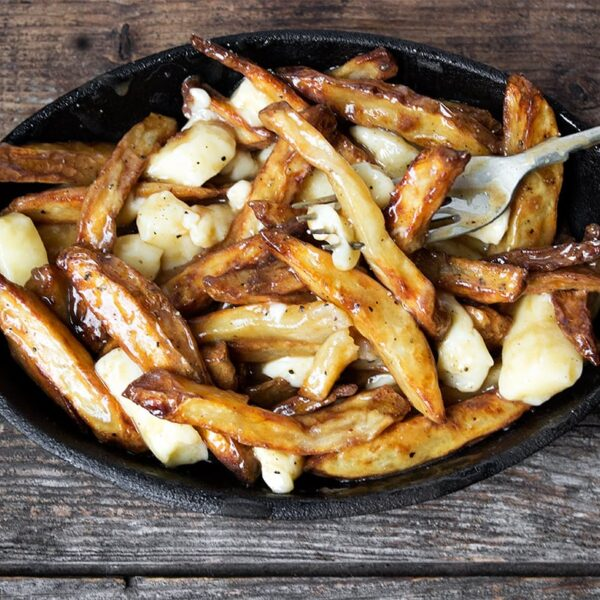

Poutine

Description
The greatest dish ever created, the French-Canadian poutine.
Few other comfort foods come close. Make this delicious dish today!
Ingredients
- Potatoes
- Cheese curds
- Gravy
Steps
- Chop the potatoes into french fries
- Fry the cut potatoes, and put it in a bowl with gravy and cheese curds
- Drizzle more gravy generously, and serve.